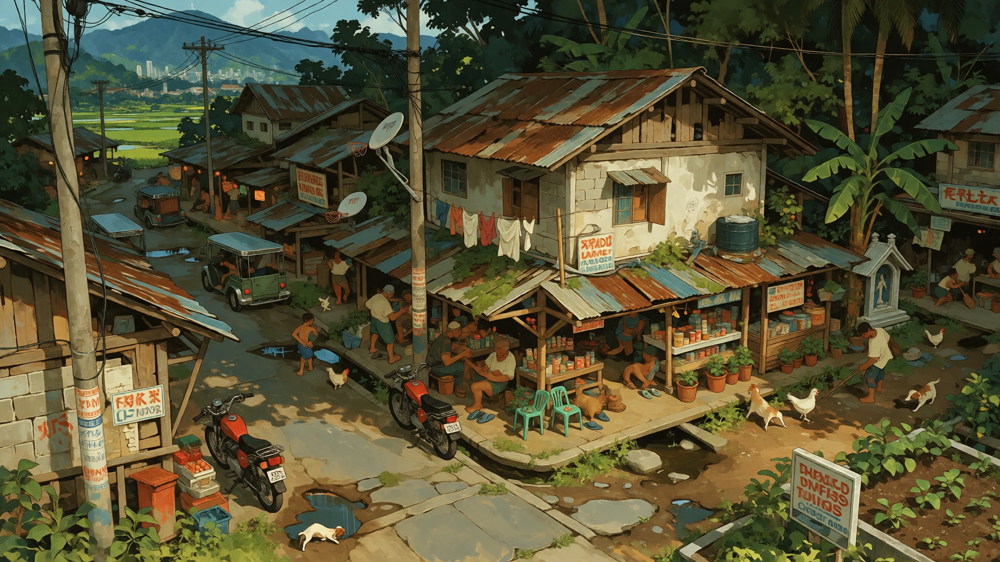

PUGAD
A SMALL PLACE OUTSIDE A VERY LARGE FUCKING CITY.
PEOPLE
LIVE HERE.
Not everybody in the world lives in Saint Jude's Landing.
Pugad is a small rural community outside the city. It has homes, businesses, roads, schools, families, arguments, birthdays, bad plumbing, dogs that get loose, neighbors who know too much, and people who have lived in the same house for most of their lives.
It is not a suburb of Saint Jude's Landing. It is not one of its districts. It is not an abandoned settlement.
It is its own place.

BORING
IS GOOD.
Most days are extremely fucking normal.


Grocery runs. School. Work. Church if that's your thing. Family dinners. Somebody fixing a truck in a driveway. Somebody growing tomatoes where they absolutely should not be growing tomatoes.

THERE'S
ROOM.
Pugad sits among fields, woods, roads, drainage, utility lines, and the kind of empty space SJL stopped having a very long time ago.
People grow things here. They keep animals. They build sheds. They repair things instead of throwing them away. They know which roads flood. They know which properties used to belong to somebody else's grandparents.
IT WORKS.
Pugad infrastructure is practical.
Roads connect to roads. Houses have yards. Utility poles go where utility poles need to go. Water comes from somewhere and disappears somewhere.
Nobody has built a shopping mall on top of a three-hundred-year-old drainage tunnel.
Not that anybody knows of.


THEN
THERE'S
THE CITY.
 ARCHIVE IMAGE / AGE UNKNOWN
ARCHIVE IMAGE / AGE UNKNOWN
Eventually every teenager gets bored.
Saint Jude's Landing is close enough to reach and far enough away to feel like somewhere else.
Going into the city became a fad. Then a tradition. Then a rite of passage.
Teenagers came back with music, clothes, slang, food, technology, gossip, stupid ideas, and stories their parents did not particularly want to hear.
Some of those things stayed.
YOU CAN
ALWAYS TELL.
You can always tell who has been to the city.

Someone heard it in a club in SJL. Now everybody's little brother knows it.
Something weird becomes fashionable three months after somebody brings it home.
Somebody brings back ingredients. Somebody else figures out how to make it.
Old city electronics become rural household equipment approximately forever.
IT'S
RIGHT
THERE.
Saint Jude's Landing is close enough that people in Pugad know it.
They know which parts to avoid. They know which businesses are worth the trip. They know somebody who works there. They know somebody who disappeared there. They know somebody who met their spouse there.
Both things can be true.


CHECHE
Pugad is where Cheche is from.
That matters.
It does not mean Pugad belongs to the Outliers, and it does not mean the community exists to explain one person.
OPEN CHECHE RECORD →

PUGAD
GOES QUIET.
Mostly.

The city is still there.
You can see it from the road.
YOU CAN ALWAYS GO BACK.PUGAD IS NOT SJL.
It is one of the places around it that kept being itself.